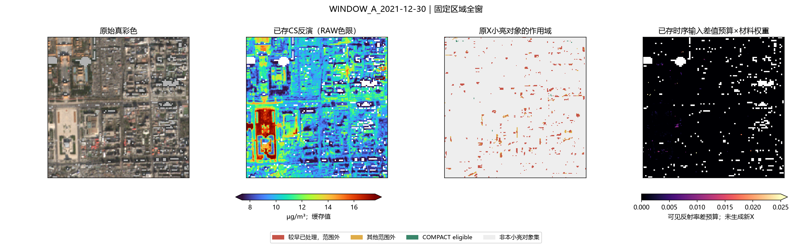
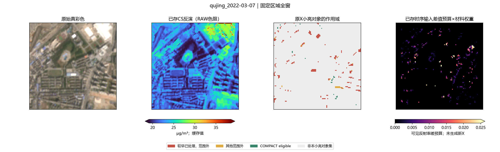
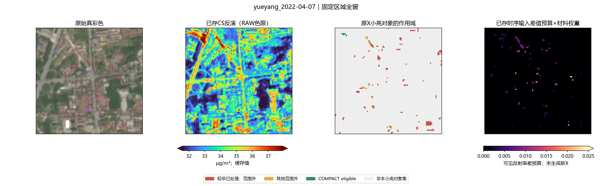
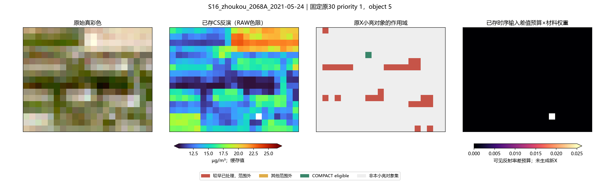
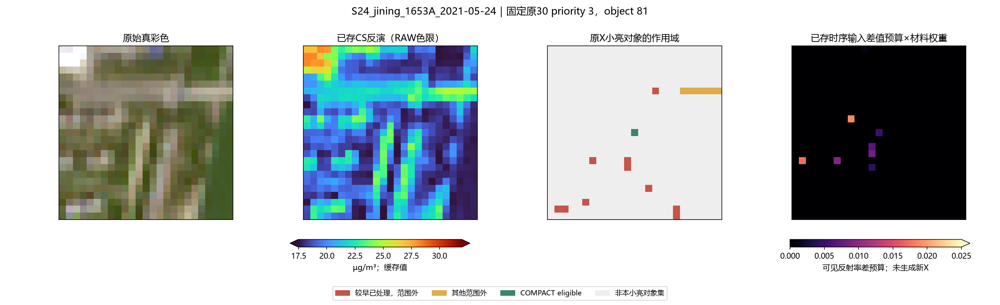
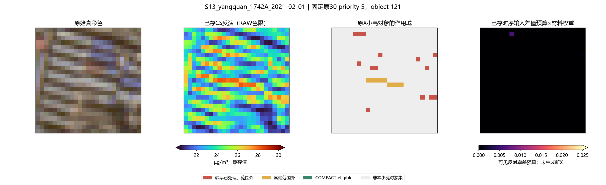

156冻结场＋原30固定对象 · 0新fit / 0新PM / 0新Xp
核心解释 · 14,958小亮对象 · 70,595正差像元 · 9/10实际缓存不变量 · 历史查重与唯一建议 · 实际时序预算
当前作用域是否成为上限：只读156场＋原30对象 1. 确认是主要“可作用范围”上限，不能据此称所有剩余值都是错误。 当前第9支COMPACT_BOUNDED_MATTING与第10支COMPACT_DINO_CONTEXT，实际缓存全部156场满足Xp_candidate>=Xp_COMPACT。它们只退回COMPACT新增扣量，最强也只能回到COMPACT，不能额外压低。原eligible之外、earlier_acted处与REFERENCE_STATE_REOPEN逐值一致。 CS_CONSISTENT_STATE是另一条并行输入链，不能把它误写为COMPACT材料头的父节点；本诊断同时读两条实际缓存。 2. 输入定义小亮对象：原X可见均值>=.16，NDVI<=.35，8连通1–25格。共14,958对象/71,351格，其中13,342对象完全在eligible外；55,346格因较早已处理不允许COMPACT再处理，12,927格属于其他范围外。eligible中仅2,927格有实际COMPACT增量，另150格增量为0、1格无参考。 “仍亮”只按原30m非亮有效邻域比较：邻域>=8格，当前可见均值与当前缓存PM均高于邻域。CS状态有14,781对象满足此描述，13,187对象（89.2%）完全不可触达。逐像元正差70,595格中55,086较早已处理＋12,489其他范围外，合计95.7%。这些是地物亮度和模型相对值，不是像元实测误差。 较早已处理组的CS可见正差均值0.034227、PM正差均值1.733719 µg/m³；其他范围外分别0.039232、1.958927。不能通过只调整9/10的材料概率改变这些格。 3. 原固定30对象具有COMPACT可作用域偏好，不能代表全图。 原队列已按原dtype阈值、原bbox、质心、像元数与邻域数逐一重核。更正后的30对象共74格：26对象全部可作用，4对象完全在范围外；0格earlier_acted，32格其他范围外，42格均有COMPACT增量。 原30对象平均CS相对PM差3.551907 µg/m³、COMPACT差3.130919；可见差CS平均0.067432。它们仍非全部确认屋顶。 先前仅用object_id在float64重标连通域中关联，误把济宁priority3与永州priority23关联到其他位置。正确priority3是(84,47)1格、priority23是(90,56)1格。原30评价一律用更正表与FIXED30_PIXEL_COORDINATES.csv；全图14,958对象仍按该全图独立float64定义统计，未改变。 4. 历史路线实际已有，不能再声称首次原生10m时序。 temporal_material/run.py：TEMP_PAST_10M与TEMP_RATIO_10M已完成156场，严格过去同网格同星同轨，最多4日、至少2次，历史候选频率>=.5。原生四带7格四方向开运算残差，过去Q25稳定幅度（RATIO先归一局地背景）；投影既有白材料谱，按当日谱向一致性、当前正残差和非负输入封顶。与EXPAND逐带min组合，原本就可处理EXPAND已改过的位置，但没有学习材料概率，也没有与当前CS状态组合。 persistent_reference/run.py：PERSIST_MATCH/STRICT复用历史“是否稳定”支持，扣量仍取当日邻域；同样不是学习材料概率×历史幅度，也非CS当前状态新输入。 native_relative_texture/api.py与native_texture_semantic/api.py：已学材料概率确实存在且覆盖有效像元，但其已有应用仍只仲裁COMPACT增量；不是跨作用域的时序模板处理。 5. 唯一建议已交root：TEMP_MATERIAL_REOPEN，先缓存输入级试验。 沿用旧TEMP严格过去eligible与已存TEMP_PAST结果，p取已存RELATIVE23材料建筑辅助概率。逐可见带：X_new = X_CS - p * max(X_CS-X_TEMP_PAST,0)。只在历史eligible作用，不再依赖COMPACT eligible或old_acted禁入；NIR/原valid不变。 它复用历史稳定分量已有谱形，不再叠加一次完整历史扣量，不撤销CS已有降低，也不靠扩大mask或重训。概率仅是弱标签辅助，不是真实材质比例。此方案只提出且计算缓存差值预算，本目录未生成新Xp或新PM。root已让另代理执行唯一候选＋无材料权重消融。 预算有边界：70,595个CS正差格中34169格具有历史支持，只有8,898格在至少一个可见带存在旧TEMP低于CS的实际输入预算；其中6,011是较早已处理、2,185其他范围外、689COMPACT活跃、13增量原为0。正确原30仅31/74格有预算。不能期待它覆盖所有剩余屋顶。 三VIS共同白谱残余门可作为后续输入诊断，本轮已选定逐带版，不同时开另一PM方案。 0新fit、0新PM、0新Xp。所有PM与输入均读冻结缓存；结果只写residual_scope_probe。未改matting或训练扩样。
| group | objects | pixels | scenes | entirely_outside_eligible | entirely_earlier_acted | with_earlier_acted | earlier_acted_pixels | outside_other_pixels | eligible_no_reference_pixels | eligible_no_extra_pixels | eligible_extra_pixels | history_eligible_pixels | CS_visible_contrast_mean | CS_PM_contrast_mean | COMPACT_PM_contrast_mean |
|---|---|---|---|---|---|---|---|---|---|---|---|---|---|---|---|
| ALL_SMALL | 14958 | 71351 | 156 | 13342 | 10075 | 12993 | 55346 | 12927 | 1 | 150 | 2927 | 34505 | 0.02963 | 1.50461 | 1.88432 |
| CS_POSITIVE | 14781 | 70962 | 156 | 13187 | 9955 | 12862 | 55112 | 12802 | 1 | 125 | 2922 | 34354 | 0.03001 | 1.52423 | 1.90010 |
| COMPACT_POSITIVE | 14895 | 71183 | 156 | 13305 | 10065 | 12977 | 55313 | 12830 | 1 | 123 | 2916 | 34412 | 0.02975 | 1.51086 | 1.89297 |
| FIXED30 | 30 | 74 | 27 | 4 | 0 | 0 | 0 | 32 | 0 | 0 | 42 | 41 | 0.06743 | 3.55191 | 3.13092 |
| scope | pixels | CS_visible_excess_mean | CS_PM_excess_mean | temporal_eligible | cached_PAST_minus_CS_mean |
|---|---|---|---|---|---|
| COMPACT_ACTIVE | 2922 | 0.02703 | 1.35977 | 1483 | 0.20579 |
| EARLIER_ACTED | 55086 | 0.03423 | 1.73372 | 27230 | 1.54459 |
| NO_COMPACT_EXTRA | 97 | 0.01203 | 0.65547 | 57 | -0.00573 |
| NO_REFERENCE | 1 | 0.00969 | 0.40600 | 0 | 0.00000 |
| OUTSIDE_ELIGIBLE | 12489 | 0.03923 | 1.95893 | 5399 | 0.27952 |
| site_id | objects | pixels | earlier_acted | outside_other | eligible_extra | CS_PM_contrast_mean | CS_visible_contrast_mean |
|---|---|---|---|---|---|---|---|
| FIXED_WINDOW_A | 1317 | 6409 | 5164 | 1106 | 126 | 1.34727 | 0.02696 |
| FIXED_WINDOW_B | 1274 | 6528 | 5315 | 1107 | 101 | 1.49022 | 0.02884 |
| FIXED_qujing | 897 | 3979 | 3179 | 605 | 192 | 1.51493 | 0.03057 |
| FIXED_yueyang | 775 | 3121 | 2650 | 416 | 53 | 1.45004 | 0.02883 |
| S01_beijing_1012A | 343 | 1768 | 1045 | 471 | 224 | 1.05255 | 0.02062 |
| S15_yueyang_1848A | 163 | 904 | 585 | 246 | 62 | 1.65573 | 0.03380 |
| S18_beijing_1010A | 247 | 1314 | 1012 | 215 | 86 | 1.32299 | 0.02601 |
| priority | case | n | earlier_acted | outside_other | eligible_extra | history_eligible_n | CS_PM_contrast | COMPACT_PM_contrast |
|---|---|---|---|---|---|---|---|---|
| 1 | S16_zhoukou_2068A_2021-05-24 | 1 | 0 | 0 | 1 | 0 | 4.75910 | 3.95191 |
| 2 | S03_daqing_1793A_2021-06-17 | 1 | 0 | 0 | 1 | 1 | 3.95330 | 3.96524 |
| 3 | S24_jining_1653A_2021-05-24 | 1 | 0 | 0 | 1 | 1 | 4.10189 | 4.48450 |
| 4 | S24_jining_1653A_2021-05-24 | 1 | 0 | 0 | 1 | 0 | 4.48573 | 4.24379 |
| 5 | S13_yangquan_1742A_2021-02-01 | 9 | 0 | 9 | 0 | 0 | 4.21538 | 4.45713 |
| 6 | S20_daqing_1791A_2020-09-15 | 1 | 0 | 0 | 1 | 1 | 4.09612 | 3.79596 |
| 7 | S30_yongzhou_2478A_2020-04-12 | 19 | 0 | 19 | 0 | 19 | 4.18283 | 4.32679 |
| 8 | S10_nanyang_2406A_2021-09-14 | 1 | 0 | 0 | 1 | 0 | 3.86446 | 3.39467 |
| 9 | S20_daqing_1791A_2020-12-04 | 2 | 0 | 0 | 2 | 1 | 3.37749 | 1.85697 |
| 10 | S06_jinan_1300A_2021-09-16 | 1 | 0 | 0 | 1 | 0 | 3.57121 | 2.47942 |
| 11 | S13_yangquan_1742A_2021-09-07 | 4 | 0 | 0 | 4 | 4 | 3.57747 | 3.14904 |
| 12 | S06_jinan_1300A_2021-05-29 | 1 | 0 | 0 | 1 | 0 | 3.39863 | 3.14273 |
| 13 | S16_zhoukou_2068A_2021-02-08 | 4 | 0 | 0 | 4 | 3 | 4.00981 | 2.68224 |
| 14 | S17_zibo_1635A_2021-09-13 | 2 | 0 | 0 | 2 | 0 | 3.36590 | 2.75130 |
| 15 | S03_daqing_1793A_2021-01-03 | 1 | 0 | 0 | 1 | 0 | 2.63611 | 1.65624 |
| 16 | S12_xuzhou_1181A_2021-05-24 | 1 | 0 | 0 | 1 | 1 | 3.55386 | 3.63810 |
| 17 | S05_jiaozuo_1829A_2021-06-06 | 4 | 0 | 0 | 4 | 0 | 3.22824 | 2.90889 |
| 18 | S07_jining_3678A_2021-06-08 | 1 | 0 | 0 | 1 | 0 | 3.06319 | 3.21097 |
| 19 | S28_xuzhou_1182A_2021-01-31 | 1 | 0 | 0 | 1 | 1 | 3.15514 | 1.89907 |
| 20 | S25_linfen_3018A_2021-05-25 | 1 | 0 | 0 | 1 | 0 | 3.77987 | 2.63889 |
| 21 | S26_nantong_1170A_2021-03-24 | 2 | 0 | 0 | 2 | 0 | 3.12203 | 2.45548 |
| 22 | S02_dandong_1602A_2021-09-12 | 3 | 0 | 3 | 0 | 0 | 3.65774 | 3.76385 |
| 23 | S30_yongzhou_2478A_2020-08-15 | 1 | 0 | 1 | 0 | 0 | 3.76269 | 3.76269 |
| 24 | S07_jining_3678A_2021-02-23 | 1 | 0 | 0 | 1 | 0 | 2.92697 | 1.76202 |
| 25 | S02_dandong_1602A_2021-08-13 | 1 | 0 | 0 | 1 | 1 | 3.02089 | 2.92074 |
| 26 | S27_nanyang_2407A_2021-04-17 | 1 | 0 | 0 | 1 | 0 | 3.10808 | 2.39040 |
| 27 | S12_xuzhou_1181A_2021-05-24 | 2 | 0 | 0 | 2 | 2 | 2.90693 | 3.18442 |
| 28 | S27_nanyang_2407A_2021-06-06 | 3 | 0 | 0 | 3 | 3 | 3.58201 | 2.92641 |
| 29 | S05_jiaozuo_1829A_2021-06-06 | 2 | 0 | 0 | 2 | 2 | 3.16259 | 3.01241 |
| 30 | S10_nanyang_2406A_2021-06-06 | 1 | 0 | 0 | 1 | 1 | 2.93153 | 3.11530 |





